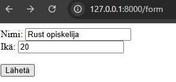

Tässä osiossa käsittelemme web-ohjelmoinnin backend-toteutusta Rust-kielellä Rocket-frameworkin avulla. Käymme läpi GET-request, POST-request, HTML-datan renderöinnin, HTML-formin käsittelyn.
1. Rocket-frameworkin käyttö
Mikä on Rocket framework?
Rocket on Rust-ohjelmointikielelle kehitetty web-sovelluskehys, joka mahdollistaa nopeiden, tyypiturvallisten web-sovellusten luomisen helposti. Sen intuitiiviset API:t tekevät siitä lähestyttävän kehittäjille taustasta riippumatta. Rocket tarjoaa tuen muun muassa lomakkeiden käsittelyyn ja JSON-datan käsittelyyn.
Jos et ole aiemmin harrastanut web-ohjelmointia, lisää tietoa get ja post-requesteista sekä geneerisesti HTTP-requesteista löydät
täältä.
Rocket frameworkin käyttö - GET Request
Katsotaan Rocket frameworkin käyttöä esimerkkien kautta. Alla on uusi projekti, jonka main.rs tiedosto on korvattu alla olevalla koodinpätkällä:
#[macro_use] extern crate rocket;
#[get("/hello/<name>")]
fn hello(name: String) -> String {
format!("Hei, {}!", name)
}
#[launch]
fn rocket() -> _ {
rocket::build().mount("/", routes![hello])
}
Käydään esimerkkikoodi läpi rivi-riviltä.
Ylin rivi:
#[macro_use] extern crate rocket;
tuo Rocketin käyttämät attribuutit ja makrot kuten #[get] ja #[launch] käyttöön. get-makrolla voimme tehdä get-reitin (route).
#[get("/hello/<name>")]:
Tämä attribuutti määrittää reitin ja parametrin:
/hello määrittelee polun URL-osoitteessa.
<name> merkitsee dynaamista parametria, joka otetaan mukaan URL:sta (esim. /hello/Matti).
hello(name: String):
Funktio, joka käsittelee GET-pyynnön. Parametri name vastaa URL:ssa annettua arvoa, ja se muunnetaan automaattisesti String-tyypiksi Rocketin toimesta.
Palautus:
format!("Hei, {}!", name)
Funktio palauttaa merkkijonon, joka luodaan format!-makrolla. Tässä tapauksessa se tervehtii käyttäjää annetun nimen perusteella.
#[launch] ja rocket::build():
Tämä kohta käynnistää Rocket-sovelluksen:
rocket::build().mount("/", routes![hello])Liittää hello-reitin sovelluksen juuri-polkuun ( / ).
Kun sovellus ajetaan cargo run komennolla, pitäisi sovellus käynnistä. Kun teet sitten selaimella tai API-työkalulla pyynnön osoitteeseen:
http://localhost:8000/hello/Matti
Vastaus on:
Hei, Matti!
Kun ajat sovelluksen, pitäisi käyttämäsi IDE:n konsoliin tulla kasa tekstiä, joista viimeisimpien joukossa on:
Rocket has launched from http://127.0.0.1:8000
Kopioi tämä lause ja mene selaimella tuohon osoitteeseen. Sinun pitäisi saada 404-errori. Muista, että teit reitin vain /hello/<parametri1> osoitteeseen, joten laita ylläolevan osoitteen perään vielä haluamasi nimi, kuten /hello/opiskelija. Tällöin sinulla pitäisi näkyä teksti:

Ja konsolissasi alla olevan kaltaista:

Response eli vastaus palvelimelta, ohjelmaltamme, oli onnistunut, response-koodi oli 200, ja ohjelma tunnisti että teimme pyynnön /hello/opiskelija osoitteeseen.
Huomaa, että get-reitin funktion parameterin nimen on oltava sama, kuin reitissä käyttämämme parametri. Esimerkkimme tapauksessa käytämmä reitissämme <name>, ja funktiomme parametrina name.
Rocket-frameworkin oma dokumenttisivu
2. HTML renderöinti
HTML renderöinti
Voimme näyttää dataa käyttäjälle paremmin HTML muodossa käyttäen Rocket-frameworkin RawHtml-moduulia.
#[macro_use] extern crate rocket;
use rocket::response::content::RawHtml;
#[get("/<page_name>")]
fn render_page(page_name: String) -> RawHtml<&'static str> {
let content = match page_name.as_str() {
"welcome" => "<h1>Tervetuloa!</h1><p>Ilo nähdä sinut täällä.</p>",
"about" => "<h1>Tietoa meistä</h1><p>Olemme Rocket-esimerkkisovellus.</p>",
_ => "<p>Sivua ei löytynyt.</p>",
};
RawHtml(content)
}
#[launch]
fn rocket() -> _ {
rocket::build().mount("/page", routes![render_page])
}
Jotta voimme näyttää käyttäjälle HTML-muodossa dataa, pitää meidän palauttaa RawHTML tyypin arvo, joka sisältää haluamamme HTML:n. Kuten näemme, funktiossamme on palautustyyppinä RawHTML, ja jotta ohjelma toimisi, pitää meidän asettaa myös elinkaari/lifetime palautusarvollemme.
Miksi käytetään 'static?
Koska RawHtml palauttaa viitteen (&str) HTML-sisältöön, ohjelman täytyy varmistaa, ettei se yritä käyttää vapautettua muistia. 'static varmistaa, että palautettu HTML on aina olemassa ohjelman suorituksen ajan.
Esimerkkiajo
Kun ajamme ylläolevan koodin, saamme /page-reittiin kaksi alareittiä, /welcome ja /about. Kun menemme osoitteeseen /about, saamme seuraavanlaisen näkymän:
Kuten huomaamme, lähettämämme tieto renderöidään antamamme HTML-tiedon mukaisesti. "Tietoa meistä" on H1-elementissä, ja "Olemme Rocket-esimerkkisovellus." -teksti on p-elementin sisällä. Listan eri HTML elementeistä löydät täältä.
Yleisimpiä elementtejä on:
- h1 ... h6 -määrittää headerin/otsikon ja sen koon
- p- normaalit tekstiosiot menevät tämän elementin sisälle
- div- käytetään eri osioiden lokeroinnissa ryhmittämisessä
- form- lomakeformaatti, johon voi laittaa sisälle useita eri elementtejä kuten button, input
- input-tyypistä on monia eri vaihtoehtoja, kuten checkbox, submit, radio, range
2.1. Form-lomake
Esimerkki form-lomakkeen käytöstä
Alla on esimerkkikoodi form-lomakkeen renderöinnistä RawHtml-funktion avulla. Määrittelemme formin sisälle input-elementtejä antaen niille halumiamme tyyppejä.
#[macro_use]
extern crate rocket;
use rocket::form::{Form, FromForm};
use rocket::response::content::RawHtml;
#[derive(FromForm)]
struct UserInput {
nimi: String,
ikä: u32,
}
#[post("/submit", data = "<user_form>")]
fn handle_form(user_form: Form<UserInput>) -> String {
let user = user_form.into_inner();
format!("Käyttäjä: {} ({}) vuotta", user.nimi, user.ikä)
}
#[get("/form")]
fn form_page() -> RawHtml<&'static str> {
let rendered_page: &str = r#"
<form action="/submit" method="post">
<label for="nimi">Nimi:</label>
<input type="text" id="nimi" name="nimi" required>
<br>
<label for="age">Ikä:</label>
<input type="number" id="ikä" name="ikä" required>
<br><br>
<input type="submit" value="Lähetä">
</form>
"#;
RawHtml(rendered_page)
}
#[launch]
fn rocket() -> _ {
rocket::build().mount("/", routes![form_page, handle_form])
}
Käytämme uusia ominaisuuksia Rocket-kirjastosta - Form, ja FromForm. Attribuutti #[derive(FromForm)] mahdollistaa Rust-rakenteen - struct - automaattisen täyttämisen lomakedatasta Rocketin avulla.
Miten se toimii?
Rocket parsii POST- tai GET-lomakepyynnöistä saadut kentät ja täyttää ne vastaaviin rakenteen kenttiin. Nimet täsmäävät HTML-lomakkeen kenttien nimien kanssa.
#[derive(FromForm)]
struct UserInput {
nimi: String,
ikä: u32,
}
Ylläoleva UserInput -rakenne vastaanottaa seuraavat HTML-lomakekentät:
<form action="/submit" method="post">
<input type="text" name="nimi">
<input type="number" name="ikä">
</form>
Validointi
Jos lomakedata puuttuu, ei täsmää, tai sisältää väärän tyyppisen arvon (esim. teksti numerokentässä), Rocket palauttaa lomakkeen käsittelyyn liittyvän virheen.
Form Datavartija (Data Guard)
Form<UserInput> on Rocketin tarjoama datavartija, joka varmistaa, että lomakedata on oikeanmuotoista ja voidaan muuntaa määriteltyyn Rust-rakenteeseen.
Miten Form toimii?
Rocket lukee lomakedatan automaattisesti HTTP-pyynnön rungosta, suorittaa FromForm-muunnoksen, ja jos muunnos onnistuu, se antaa pääsyn tietorakenteeseen.
- data = "<user_form>" kertoo Rocketille, että se odottaa saavansa dataa, joka talletetaan user_form muuttujaan
- Form<UserInput> lukee ja tarkistaa datan
- user_form.into_inner() palauttaa varsinaisen UserInput-rakenteen käsittelyyn.
Tämän jälkeen esimerkkimme muuttuja user on UserInput-tyypin instanssi, jonka kenttijä name ja age voimme kutsua normaalisti:
user.nimi
user.ikä
Ohjelman ajo
Alla näemme ohjelman toiminnan.
Renderöimme sivun form-lomakkeen /form-reitille, lähetämme datan /submit-routeen ja lähettäessämme datan, pääsemme toiselle sivulle.
3. POST-request ja Postman
Mikä on Postman?
Postman on ilmainen API työkalu, jonka avulla voit esimerkiksi testata HTTP-reittejä, antaa dataa lähetettäviksi näihin routeihin ja katsoa mitä saat vastaukseksi.
Koska POST-routet vaativat dataa body:n sisällä, ei pelkkä selaimen käyttö anna meille helppoja keinoja kokeilla POST-routejamme.
Postmanin käyttöohjeet löydät
täältä.
Postman Agent asennuslinkin löydät
täältä. Postman Agent toimii siten, että voit lähettää ja vastaanottaa requesteja kun Postman Agent on asennettu ja olet luonut tilin Postmaniin.
Routejesi testaus jonkun palvelun kuten Postman-kautta ei ole pakollista, mutta helpottaa ohjelmointitehtäviesi tekemistä.
Miten teen POST-reitin?
Alla näemme kuvan, jossa lähetetään uuden requestin kautta POST-pyyntö osoitteeseen localhost:8000/math/tuplaus.
Olemme valinneet Bodyyn datatyypiksi raw, jotta voimme lähettää tekstiä sellaisenaan. Esimerkissämme lähetämme arvon 5, tekstimuodossa.
Alla näemme Responsen koodin, 200, sekä tekstivastauksen:
Kaksinkertainen arvo: 10
Alla näemme koodin, jolla saimme ylläolevan post-routen tehtyä.
#[macro_use] extern crate rocket;
#[post("/tuplaus", data = "<number>")]
fn double_number(number: String) -> String {
match number.trim().parse::<i32>() {
Ok(value) => format!("Kaksinkertainen arvo: {}", value * 2),
Err(_) => String::from("Anna kelvollinen kokonaisluku!"),
}
}
#[launch]
fn rocket() -> _ {
rocket::build()
.mount("/math", routes![double_number])
}